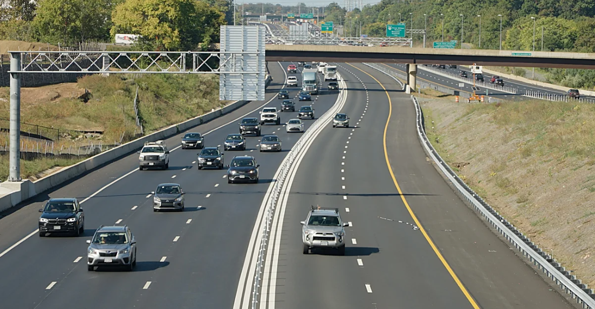
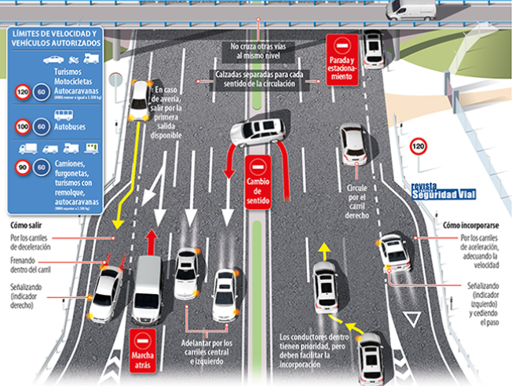

Una autovía es una vía de alta capacidad destinada a la circulación rápida de vehículos, similar a la autopista pero con algunas diferencias en accesos y diseño.
Permite una circulación fluida con ciertas limitaciones de acceso y cruces controlados.

Una autovía es una vía de alta capacidad destinada a la circulación rápida de vehículos, similar a la autopista pero con algunas diferencias en accesos y diseño.
Permite una circulación fluida con ciertas limitaciones de acceso y cruces controlados.
1. Calzadas separadas por sentidos de circulación.
2. Puede tener accesos más frecuentes que una autopista.
3. No tiene cruces a nivel peligrosos, aunque puede haber intersecciones controladas.
4. Señalización clara y continua.

1. Puede tener intersecciones y accesos más abiertos.
2. No siempre requiere peaje.
3. Accesibilidad algo mayor que en autopistas.
4. Diseño ligeramente menos restringido.

Se debe circular por el carril derecho salvo para adelantar.
Respetar siempre los límites de velocidad establecidos.
Mantener la distancia de seguridad.
Permiten desplazamientos rápidos entre ciudades.
Reducen tiempos de viaje.
Mayor seguridad que carreteras convencionales.
Revisar los espejos antes de cambiar de carril.
Usar intermitentes siempre que se realicen maniobras.
Adaptar la velocidad al tráfico.
Planificar las salidas con antelación.
No respetar la distancia de seguridad.
Exceso de velocidad.
Circulación indebida por carriles incorrectos.
No señalizar maniobras.